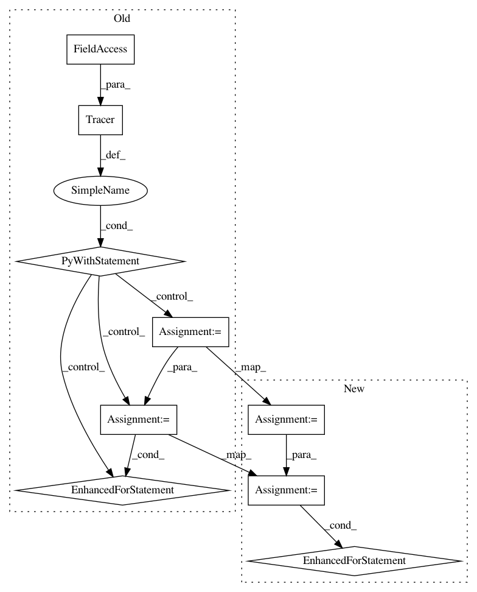

7c1ac157d5bc84fe79799611abf471cc67ff5fd5,ilastik/applets/featureSelection/featureSelectionGui.py,FeatureSelectionGui,getFeatureLayers,#FeatureSelectionGui#Any#Any#,129
Before Change
Generate a list of layers for the feature image produced by the given slot.
with Tracer(traceLogger):
layers = []
channelAxis = inputSlot.meta.axistags.channelIndex
assert channelAxis == featureSlot.meta.axistags.channelIndex
numInputChannels = inputSlot.shape[channelAxis]
numFeatureChannels = featureSlot.shape[channelAxis]
// Determine how many channels this feature has (up to 3)
featureChannelsPerInputChannel = numFeatureChannels / numInputChannels
assert 0 < featureChannelsPerInputChannel <= 3, "The feature selection Gui does not yet support features with more than three channels per input channel."
for inputChannel in range(numInputChannels):
// Determine the name for this feature
featureName = featureSlot.meta.description
assert featureName is not None
if 2 <= numInputChannels <= 3:
channelNames = ["R", "G", "B"]
featureName += " (" + channelNames[inputChannel] + ")"
if numInputChannels > 3:
featureName += " (Ch. {})".format(inputChannel)
opSubRegion = OpSubRegion(graph=self.mainOperator.graph)
opSubRegion.Input.connect( featureSlot )
start = [0] * len(featureSlot.meta.shape)
start[channelAxis] = inputChannel * featureChannelsPerInputChannel
stop = list(featureSlot.meta.shape)
stop[channelAxis] = (inputChannel+1) * featureChannelsPerInputChannel
opSubRegion.Start.setValue( tuple(start) )
opSubRegion.Stop.setValue( tuple(stop) )
featureLayer = self.createStandardLayerFromSlot( opSubRegion.Output )
featureLayer.visible = False
featureLayer.opacity = 1.0
featureLayer.name = featureName
layers.append(featureLayer)
return layers
def initFeatureDlg(self):
Initialize the feature selection widget.
After Change
channelAxis = inputSlot.meta.axistags.channelIndex
assert channelAxis == featureSlot.meta.axistags.channelIndex
numInputChannels = inputSlot.shape[channelAxis]
numFeatureChannels = featureSlot.shape[channelAxis]
// Determine how many channels this feature has (up to 3)
featureChannelsPerInputChannel = numFeatureChannels / numInputChannels
assert 0 < featureChannelsPerInputChannel <= 3, "The feature selection Gui does not yet support features with more than three channels per input channel."
for inputChannel in range(numInputChannels):
// Determine the name for this feature
featureName = featureSlot.meta.description
assert featureName is not None
if 2 <= numInputChannels <= 3:
channelNames = ["R", "G", "B"]
featureName += " (" + channelNames[inputChannel] + ")"
if numInputChannels > 3:
featureName += " (Ch. {})".format(inputChannel)
opSubRegion = OpSubRegion(graph=self.mainOperator.graph)
opSubRegion.Input.connect( featureSlot )
start = [0] * len(featureSlot.meta.shape)
start[channelAxis] = inputChannel * featureChannelsPerInputChannel
stop = list(featureSlot.meta.shape)
stop[channelAxis] = (inputChannel+1) * featureChannelsPerInputChannel
opSubRegion.Start.setValue( tuple(start) )
opSubRegion.Stop.setValue( tuple(stop) )
featureLayer = self.createStandardLayerFromSlot( opSubRegion.Output )
featureLayer.visible = False
featureLayer.opacity = 1.0
featureLayer.name = featureName
layers.append(featureLayer)
return layers
@traceLogged(traceLogger)
def initFeatureDlg(self):
In pattern: SUPERPATTERN
Frequency: 3
Non-data size: 9
Instances
Project Name: ilastik/ilastik
Commit Name: 7c1ac157d5bc84fe79799611abf471cc67ff5fd5
Time: 2012-08-21
Author: bergs@janelia.hhmi.org
File Name: ilastik/applets/featureSelection/featureSelectionGui.py
Class Name: FeatureSelectionGui
Method Name: getFeatureLayers
Project Name: ilastik/ilastik
Commit Name: bbb5b24cf34e7db041aec13973e5a795313f1116
Time: 2013-03-08
Author: bergs@janelia.hhmi.org
File Name: ilastik/applets/dataSelection/dataSelectionSerializer.py
Class Name: DataSelectionSerializer
Method Name: _serializeToHdf5
Project Name: ilastik/ilastik
Commit Name: bbb5b24cf34e7db041aec13973e5a795313f1116
Time: 2013-03-08
Author: bergs@janelia.hhmi.org
File Name: ilastik/applets/dataSelection/dataSelectionSerializer.py
Class Name: DataSelectionSerializer
Method Name: _deserializeFromHdf5